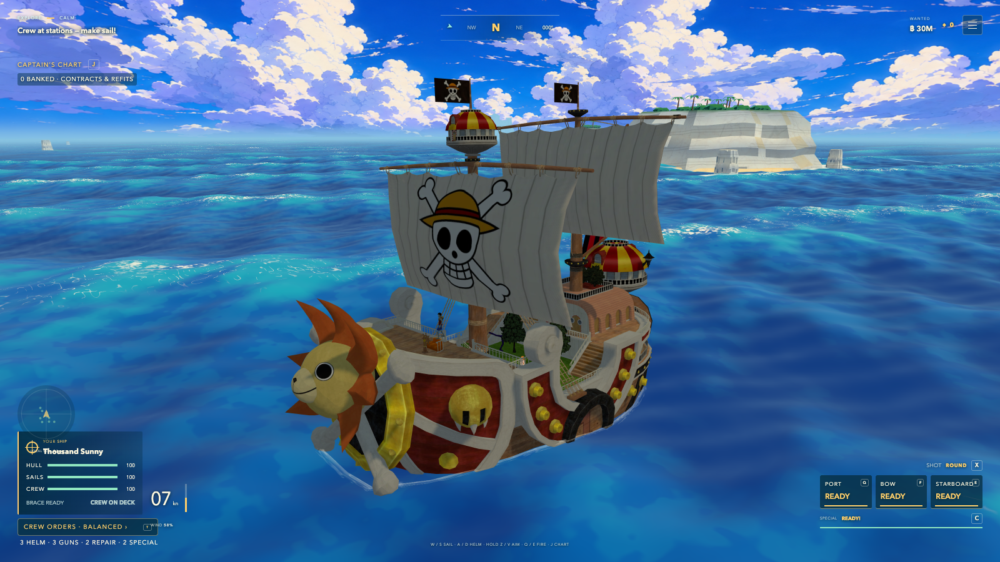
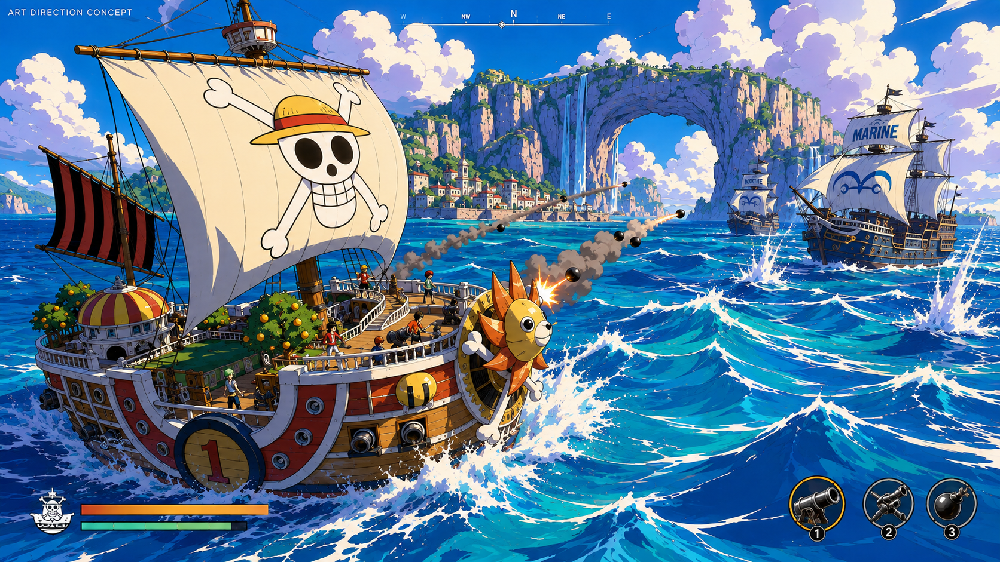
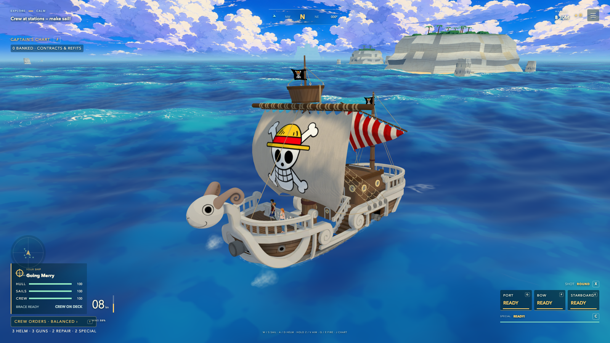
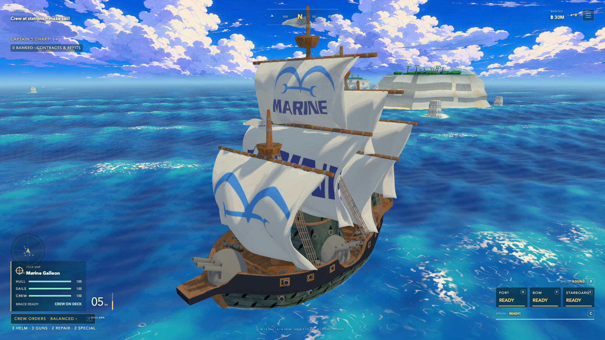
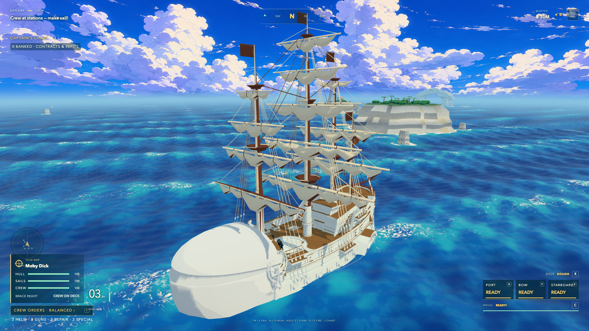
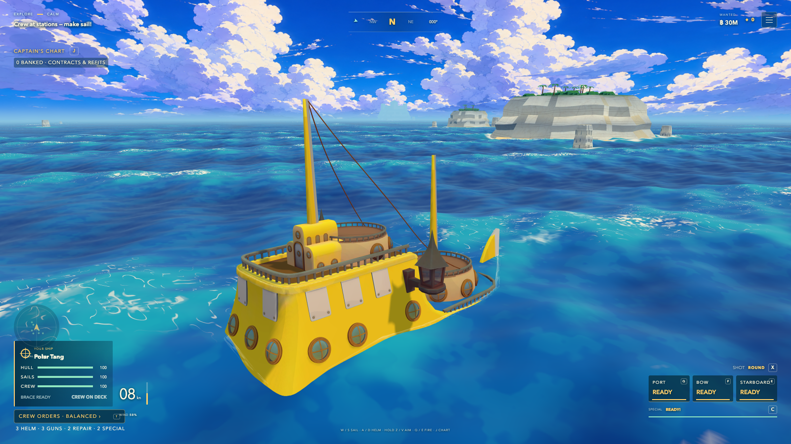
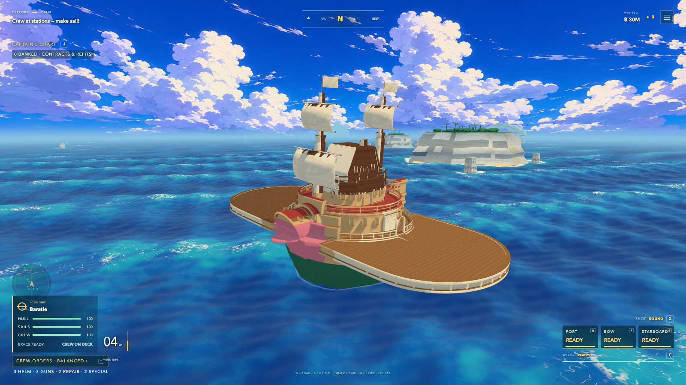

ACTUAL ENGINE · BUILD 23
Thousand Sunny

One piece Thousand Sunny🌞 · Miraculousetabug · 3 visible-source crew instances in the scene
Six complete Sketchfab ships and four downloaded character models replace the generated ship kit. Each image below is an unedited engine capture; click it for full resolution. The approved illustration is shown separately.
Current review and measured evidence · Fresh blind visual review · Creators, licenses and acquisition coverage · Image hashes


One piece Thousand Sunny🌞 · Miraculousetabug · 3 visible-source crew instances in the scene

The Going Merry (One Piece) - Game Ready · Oliver Edwards · 3 visible-source crew instances in the scene

Marine ship From One piece · Ryanwill679/TrashCG · 0 visible-source crew instances in the scene

Moby Dick Ship · Tigerar1 · 1 visible-source crew instances in the scene

Polar Tang · taem5070 · 0 visible-source crew instances in the scene

Baratie - One Piece · Chin Eeyang · 1 visible-source crew instances in the scene